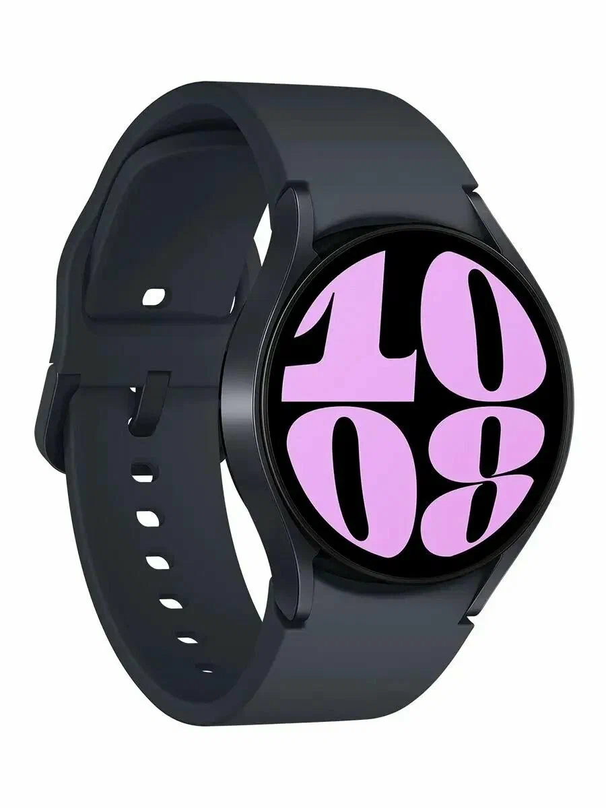

Samsung Galaxy Watch 6 — стильные умные часы с круглым AMOLED-экраном. Отслеживают пульс, сон, уровень стресса и физическую активность. Поддерживают установку приложений, уведомления со смартфона и бесконтактную оплату. Отличный аксессуар для здорового образа жизни.
Samsung Galaxy Watch 6 — стильные и функциональные умные часы с круглым Super AMOLED-экраном, который стал ещё больше за счёт уменьшенных рамок. Процессор Exynos W930 обеспечивает быструю работу интерфейса и приложений. Часы непрерывно отслеживают пульс и уровень кислорода в крови, анализируют качество сна, измеряют индекс массы тела и уровень стресса. Платформа Wear OS 4 открывает доступ к тысячам приложений из Google Play, включая навигацию, мессенджеры и стриминговые сервисы. Поддержка Samsung Pay и Google Pay позволяет оплачивать покупки прямо с запястья. Защита от воды 5 ATM + IP68 делает часы пригодными для плавания в бассейне. Аккумулятор ёмкостью 300 мАч обеспечивает до 40 часов работы в обычном режиме.
© Click Store. Все права защищены.